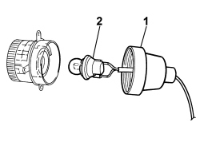
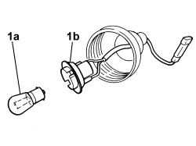
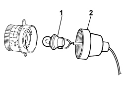

5550C18 BULB OF ONE FRONT TURN SIGNAL, L/H OR R/H - R+R
- Path
- Procedures > 55 ELECTRICAL EQUIPMENT > 5550 WARNING AND MANOEUVRING INDICATORS > 5550C TURN SIGNAL/HAZARD WARNING LIGHTS > 5550C18 BULB OF ONE FRONT TURN SIGNAL, L/H OR R/H - R+R
- Kind
- repair procedure (removal / refitting; the operation number is the code)
- Applies to
- engines: 1.3 JTD 16v; all production periods; only with equipment: SUV
- Interactive page
- https://sloeber94.github.io/elrnDB-fPnd/en/#/169002229
Applies to: engines: 1.3 JTD 16v; all production periods; only with equipment: SUV
 Removing
Removing
 Refitting
RefittingDisconnect the negative battery terminal.
Applies to: engines: 1.3 JTD 16v; all production periods; only with equipment: SUV
1. Remove the protective gaiter.
2. Rotate the bulb holder in an anti-clockwise direction and remove complete with the bulb.

Applies to: engines: 1.3 JTD 16v; all production periods; only with equipment: SUV
1. Press bulb (1a) and turn anticlockwise and remove from bulb holder (1b).

Applies to: engines: 1.3 JTD 16v; all production periods; only with equipment: SUV
Refitting
Removing1. Fit bulb (1b) in bulb holder (1b), inserting in its seat after pressing and turning clockwise.

Applies to: engines: 1.3 JTD 16v; all production periods; only with equipment: SUV
1. Fit the bulb holder with bulb and secure by turning clockwise.
2. Remove the protective gaiter.

Applies to: engines: 1.3 JTD 16v; all production periods; only with equipment: SUV
Op. 5550C30 L/H OR R/H FRONT TURN SIGNAL (ONE) - R+R
Connect the negative battery terminal.